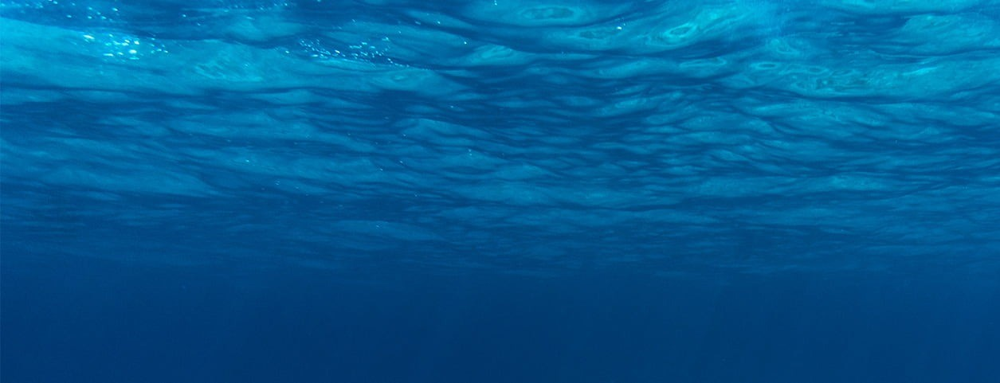

A poluição plástica nos oceanos é um dos desafios ambientais mais críticos ou difíceis do século, com milhões de toneladas de plástico e lixos sendo descartadas anualmente nos nossos oceanos, viemos então enfrentando uma crescente crise de poluição que afeta a vida marinha, os ecossistemas e até mesmo a saúde humana. Com isso algumas espécies marinhas, peixes, aves e mamíferos, vem confundindo embalagem de plástico com alimento, isso causa morte ou ferimento em muitos deles. A poluição provocada pelo descarte inadequado do plástico é um problema ambiental que tem se agravado de forma significativa. Muitos estudos revelam que anualmente 10 milhões de toneladas desse material vão parar nos oceanos.
